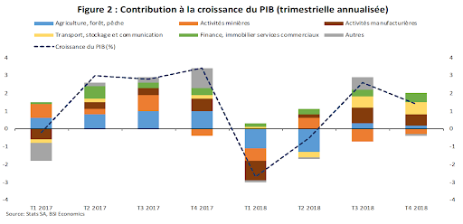

L'AFRIQUE DU SUD
Afin de mieux comprendre la réussité de l'Afrique du Sud incarné par son PIB , nous étudierons ce pays sur 3 plans: géographique, démographique et économique
Afin de mieux comprendre la réussité de l'Afrique du Sud incarné par son PIB , nous étudierons ce pays sur 3 plans: géographique, démographique et économique
L'Afrique du Sud est en grande partie un pays aride, la plupart de ses régions occidentales étant semi-désertiques. Les précipitations augmentent dans l'est (le Highveld, le KwaZulu-Natal et les Midlands de l'est) et tombent principalement en été. L'étroite bande côtière sud reçoit des précipitations toute l'année à l'est (Garden Route) et des précipitations hivernales à l'ouest (sur la péninsule du Cap et ses environs). Les étés sont doux à chauds, tandis que les températures hivernales peuvent varier, selon la localité, du froid au grand froid. Ainsi, le Karoo, qui occupe une grande partie du plateau central occidental, a un climat extrêmement chaud en été et très froid en hiver. En revanche, la côte orientale de l'océan Indien est luxuriante, bien arrosée et réchauffée par le courant du Mozambique ; des parcelles de mangroves d'Afrique australe poussent le long de cette côte.
Comme une grande partie du continent africain au sud du Sahara, le paysage de l'Afrique du Sud est dominé par un haut plateau central entouré de basses terres côtières. Ce plateau est bordé par le grand escarpement qui s'étend vers le nord jusqu'à environ 10° au sud de l'équateur (c'est-à-dire en Angola à l'ouest et dans l'escarpement de Muchinga en Zambie à l'est). En Afrique du Sud, le plateau est à son plus haut niveau à l'est où son arête varie en altitude entre 2 000 m et 3 300 m3. Cette bordure du plateau, qui descend brusquement vers la plaine côtière, forme un escarpement très élevé et connu sous le nom de Drakensberg. Les étendues sud et ouest de l'escarpement ne sont pas aussi hautes que le Drakensberg, mais sont également connues sous une grande variété de noms locaux, toutes appelés « montagnes » (ou « berge » en afrikaans) malgré le fait qu'il fasse partie d'un escarpement dont le sommet est le plateau central.
La flore d’Afrique du Sud varie selon le niveau des précipitations et donc des régions. Ces climats variés ont permis l’acclimatation de nombreuses espèces d’arbres. On y trouve par exemple des nombreux aloes, acacias et albizias ainsi que le célèbre baobab, réputé comme l’un des arbres les plus gros au monde. L’Afrique du Sud possède un véritable trésor naturel où la végétation est particulièrement diversifiée (flore montagneuse, subtropicale, désertique…) et possède plus de 25 000 espèces de plantes à fleurs indigènes dont certaines sont endémiques.
l'Afrique du Sud a commencé à accueillir des réfugiés venant d'autres pays africains, souvent clandestins19. Le gouvernement a mis en place une politique stricte vis-à-vis de l'immigration illégale : un million de personnes ont été reconduites à la frontière dans les années 199020. compte environ 56 millions d'habitants en . Majoritairement urbaine avec un taux de 64,8 % en , la population est inégalement répartie : la plupart des habitants résident à l'est du pays. Le Gauteng est la région la plus peuplée suivie par le KwaZulu-Natal. L'aridité explique en partie les faibles densités du Nord-Ouest. Après la fin de l'apartheid, l'Afrique du Sud a commencé à accueillir des réfugiés venant d'autres pays africains, souvent clandestins. Le gouvernement a mis en place une politique stricte vis-à-vis de l'immigration illégale : un million de personnes ont été reconduites à la frontière dans les années . Malgré cela, l'Afrique du Sud accueille entre deux et cinq millions de migrants illégaux dont trois millions seraient originaires du Zimbabwe. l'Afrique du Sud accueille également 144 700 réfugiés en droit d'asile en , dont 48 400 du Zimbabwe, 24 800 de la République Démocratique du Congo et 12 900 de Somalie.
| Année | Nombre d'habitants | -moins de 20 ans | reste de la population |
|---|---|---|---|
| 60 000 000 | 40,1% | 59,9% | |
| 56 000 000 | 38,9% | 61,1% | |
| 186 000 000 | 38,4% | 61,6% | |
| 181 000 000 | 37% | 63% |
Avec un PIB de 370 Mds USD (62 % du PIB d’Afrique australe ; 21 % du PIB d’Afrique sub-saharienne), 'Afrique du Sud unique pays africain membre des BRICS et du G20, est la 2e économie du continent derrière le Nigéria . Toutefois, en termes de richesse par habitant, l’Afrique du Sud (6 377 USD/tête - 2e pays d’Afrique australe derrière le Botswana) se situe bien devant ce pays.
 Le pays dispose de nombreux atouts qui en font une économie émergente importante : économie la plus moderne et diversifiée d’Afrique (malgré une forte dépendance au secteur minier – 7 % du PIB), secteur des services puissants (notamment financiers – 21 % du PIB),large ouverture aux exportations, stabilité politique et fiabilité des institutions notamment judiciaires, richesses en ressources naturelles, qualité des infrastructures, progression de la classe moyenne, sophistication financière (11e et devant la France sur ce critère au classement du World Economic Forum). La croissance du pays a cependant du mal à redécoller depuis la récession de (croissance de 1,3 % en ). D’importants progrès ont été enregistrés depuis la fin de l’Apartheid : réduction de l’extrême pauvreté (11,5 % en , 5 % en ), accès à l’électricité (accessible pour 83 % des ménages) ou au logement (79,4 % des ménages résident aujourd’hui dans des maisons en dur), mais le pays souffre encore d’importantes disparités sociales.